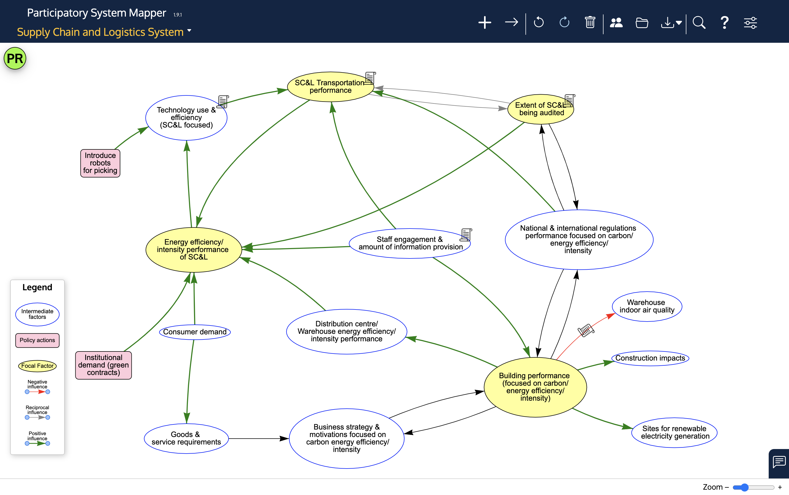
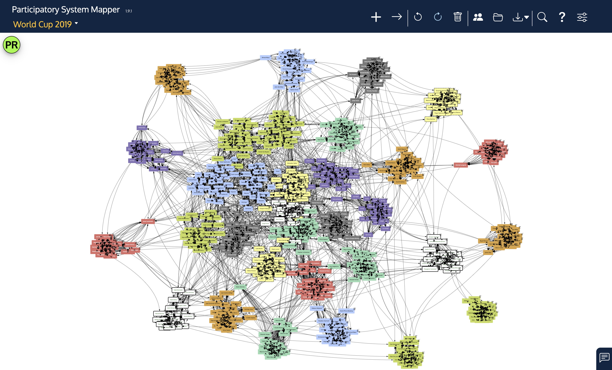
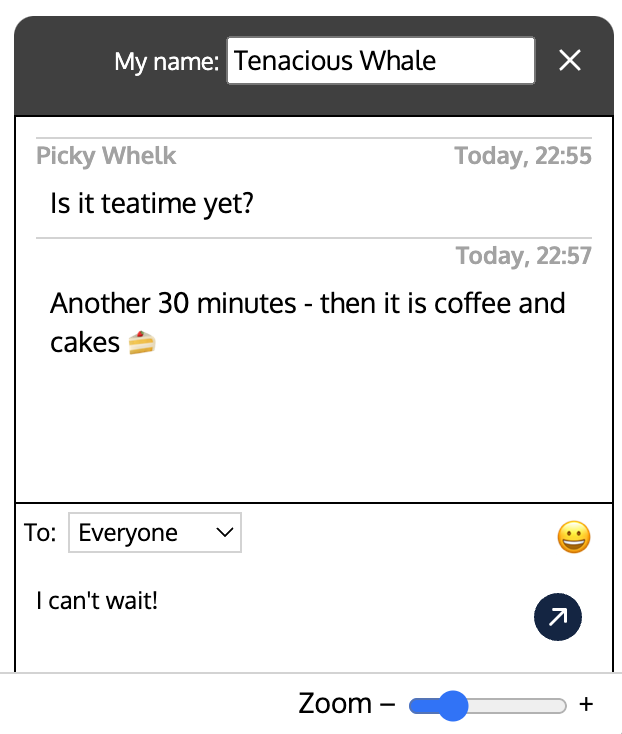
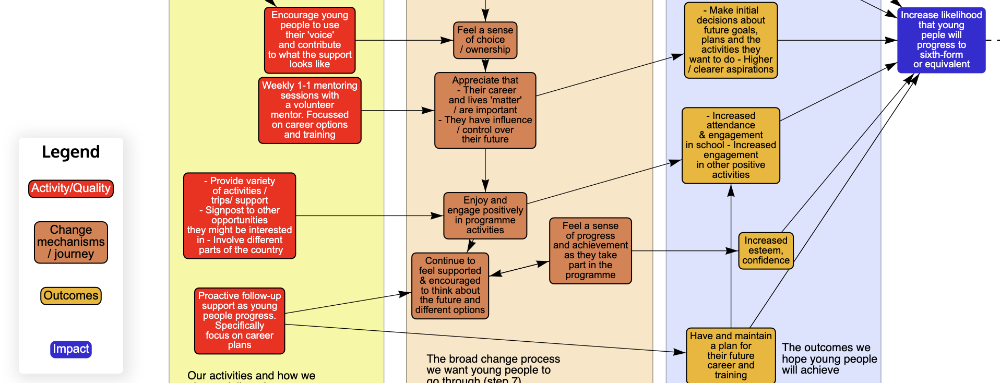

PRSM Help
Participatory System Mapper
What is it?
The Participatory System Mapper (PRSM for short) is an app that runs in a web browser that makes it easy for a group of people working together to draw networks (or 'maps') of systems.
Maps
The network or map can be anything that has items (or 'factors' or 'nodes') connected by links (or 'edges'). Here are some examples:
- People (the nodes) connected by knowing each other
- Factors or variables causing (the links) changes in other factors
- Switches connected by wires
- Computers connected by network links
- Theories expressed as variables and relationships between them
- Company boards of directors (the nodes) and the directors that sit on more than one board (the links)
- Twitter hashtags (the nodes) included together on posts (the links)
- Scientists (the nodes) co-authoring papers (the links)
- and so on.
Systems
The software is aimed at people who are interested in understanding whole systems. Wikipedia defines a system as a group of interacting or interrelated entities that form a unified whole.
Participatory system mapping
The app is designed to enable groups of people, each using their own computer (or tablet) to collaborate in the drawing of a map. They may be sitting around a table, discussing the map as it is created face to face, or working remotely, using video conferencing or the chat feature that is built into the app. Everyone can participate because every edit (creating nodes and links, arranging them and so on) is broadcast to all the other participants as the changes are made (just as Google Docs does for text, for example).
When you start the app in your browser, a 'room' is created for you in which to draw your network. You can add other users to this room to share the work. Only those with access to the room can see what is being created.
Examples
Here are a few examples of what you can do with the app:
The first is a theory of change adapted from an NPC report.

The second is a system map about the environmental impact of goods transport developed by a small group of experts working together using the app.

The third is a large network of 736 nodes and about 9000 links representing the team members playing in the 2019 football World Cup.

All the examples can be opened in the app using the files here.
Installation
No installation on users' computers is needed. The software is a web app, which means that it can be accessed using a web browser by pasting this link into the address bar:
https://cress.soc.surrey.ac.uk/prsm/prsm.html
You need a modern web browser such as Chrome, Firefox, Microsoft Edge or Safari. It will not work with Internet Explorer.
The software is free and available under an MIT license.
Basic use
When the app is started for the first time in your browser, there is an option to type in your name and then to follow a brief tutorial that shows you the main items on the web page.
At the top of the screen are a row of buttons:
This what they do, from left to right:
- New factor (or node). Click on the cross and then click on the blank area below (the 'network pane') to create a node for the network. A small dialog box will open for you to type in a label for the factor.
- New link (or edge). Click on the arrow button and then drag from one factor to another to link them. If you wish, you can have two links between a pair of factors: one for each direction.

- Undo. Reverses the last action (e.g. if you have just created a new factor, it will be removed).
- Redo. Redo the last action (e.g. if you have just undone the creation of a nodfactore, this will return the factor to the network).
- Bin. First, select a factor or a link by clicking on it. Note that the factor or link is listed in the status bar at the bottom of the window. Then click on the bin button - the factor or link is deleted. Undo will restore it if you click on the undo button next.
- Share. Shows a dialog box with a web link that you can copy and send to someone else. If they then access that link, they will see your network and can edit and add to it.
- Open file. Read in a file containing a network from your computer drive. See below for supported file formats. The content of the file replaces the network in the browser.
- Save file. Save the network in a file on your computer. The file is saved in the app's own format, or if you click on the small triangle next to the button, you can choose to save in GML (Graph Markup Language) or CSV (Comma Separated Values) formats.
- Help Display this help page in a separate window.
- Settings. Opens a panel that allows much more customisation and exploration of the network (see Styling the map below).
To select a factor or a link, click on it. To select more than one, click on one factor or link and then hold down the pointer over the other. At the bottom of the window is the status bar, which will show which factors and links have been selected.
Also at the bottom of the window on the right is a slider that will adjust the magnification: slide to the right to make the factors and links larger and to the left to make them smaller (or click on the + and - signs). To return the network to a size that will fit neatly in the window, double click anywhere on the network background.
Each node can be moved across the network pane by selecting it and dragging. The whole network can be moved by dragging the background.
Sharing
If you use the link above to start the app, a new room is created for you. When you click on the share icon, a dialog box is shown that includes the name of the room in the link that is displayed:

Click the button to copy the web link to the clipboard, and then paste the link into an email, or a text message or just tell other participants the name of the room (which is a randomly generated set of 4 groups of three capital letters separated by hyphens). When they access the link, they will see whatever is in your app window.
Formatting factors and links
Double clicking on a factor or a link will bring up a small dialog that enables you to change the design of the factor or link - its colour, shape or the label.

See Styling the map for more on changing the look of factors and links.
The chat window
Clicking on the speech ballons at the bottom right opens up a chat window that you can use to type messages to other participants in your room.
If you haven't provided your real name, the name at the top is initially randomly generated, but if you click on it, you can substitute your own. You can write messages in the box at the bottom and send them by clicking the paper plane button. Use the X to close the chat window.
If someone has sent you a message but your chat window is closed, the button will gently pulse to remind you to open the chat window:

File formats
The app can read files in its native format (files with the suffix '.prsm'), GRAPHML format (.graphml), GML (.gml) or Comma Separated Values (.csv). A CSV file must contain a two columns of values. Each row represents a link. In the first column is the label of the factor from which the link points, and in the second column is the label of the factor the link is pointing to. This very simple format is designed to allow straightforward imports from other software. Optionally, the third and fourth columns may contain an integer between 1 and 9 - if they do, the factor is styled with that style (styles are numbered from top left to bottm right as shown on the Factors tab). The fifth column may contain the style number for the link.
The app can create output files in the app's own native format, as a GML file or as a CSV file.
Privacy and security
The only way to join the room and see the network is by using the randomly generated room name, and the chances of finding that name by trial and error is very, very small. The network is not stored on any server (there is a central server, but this is only used to broadcast encoded messages from one participant in a room to another). The server is located in Europe.
Styling the map
The view you see when you first open the app is intentionally very simple, but hidden away are many more features. To access these, click on the last, Settings, button on the top bar:  . This will reveal a set of three tabs: Network, Factors and Links, with the Factors tab open.
. This will reveal a set of three tabs: Network, Factors and Links, with the Factors tab open.
The panel showing the tabs can moved across the network pane: just drag any of the three tabs and they and the panel below will move. This can be useful if the panel gets in the way of seeing the network.
Factors tab

Here there are 9 sample styles for how factors can look. If you select a factor from the network, and then click on one of the 9 styles, the factor will change to resemble the style. As a short cut, if you click on the 'Select all factors' button at the bottom, and then click on a style, all the factors will change to the chosen style.
Double clicking on any of the 9 styles opens a dialog box to change the style:

There are options to change the colour of the background (the 'fill'), the border and the font of the label, to change the shape, for example to a rectangle or a circle, to change the border from solid to dashed or dotted, and to change the font size of the label.
You can also change the name of the style. If you do so, this name will appear on the network pane as one item in the 'legend'. So, for example, if you had some factors that are Actions, some that are Outputs and some that are Outcomes, you could give three of the styles these names, colour their fills red, green and blue, and the apply these styles to the appropriate factors in the network. The legend will be automatically displayed on the network pane, thus:

The legend can be moved by dragging the top of the Legend pane.
If you select just one factor, a small panel appears below the styles. This shows the factor label, some network statistics about the factor, and an area where you can type in further information about the factor as a note. If you hover the pointer above the factor, the note will be shown. There is also a check box, Fix - if this is checked, the factor will be locked into place on the network pane and cannot be dragged elsewhere.

Links tab
The Links tab is very similar to the Factors tab, except that it relates to the links. There are 9 link styles and each of these can be changed by double clicking the link style. There are options to change the colour of the link, whether it has an arrow at the end, whether it is solid, dashed or dotted, and to add a link label.

Network tab
The network tab enables you to change many aspects of the network visualisation.

From top to bottom, there are controls for:
- Auto Layout If this switch is set to ON, the app attempts to move the factors and links to create a neat layout with a minimum number of crossing links. It is best to switch this on, wait for the factors to move to their calculated positions, switch it off and then manually adjust the factors to a pleasing layout.
- Spacing This slider only appears when Auto Layout is on. With it, you can adjust the space between the factors and the length of the links.
- Snap to grid When ON, factors can only be placed at the intersection of invisible grid lines. This makes it much easier to line up factors neatly.
- Link Links can either be drawn using a curved line or a straight line. This control swaps between these two styles.
- Background Changes the colour of the background of the network pane. Click on the colour well to display possible colours. The default is white, but a black background can also be effective.
- Show drawing layer Puts the network pane into drawing mode, so that background shapes, images and text can be added. See Drawing Mode for more details.
- Show labels If switched OFF, the factors are shown without their labels.
- Show legend If the factor and link styles are given names (other than 'Sample'), the styles and their names will be shown in a panel at the left bottom of the network pane headed 'Legend', when this switch is ON. See the description of the Factors tab.
- Show only neighbouring Factors If you first select a Factor, (or several Factors) and then one of these buttons, all Factors in the network will be hidden, except for those 1, 2, or 3 links away from the selected Factor(s). This is useful when one wants to focus on one part of a large network.
- Show only up or downstream Factors If you first select a Factor, (or several Factors) and then one of these buttons, all Factors in the network will be hidden, except for those 'downstream (i.e. linked to the selected Factor(s) by following links directed away from those Factor(s)), or those 'upstream' (i.e. linked to the selected Factor(s) by following links directed towards from those Factor(s)).
- Adjust size of Factors THis is used to change the size of the Factors to be proportional to one of a set of metrics: the number of inputs (the 'in-degree'), the number of outputs (the 'out-degree'), the leverage (ratio of inputs to outputs), or the betweenness centrality. Note that the Factors are always drawn large enough to accommodate their labels, and so the size may not be exactly proportional to the metric.
Drawing Mode
Switching 'Show drawing layer' ON reveals a group of buttons on the left that enable you to draw shapes, write text, and import images on to the network background.

In drawing mode, the background has a faint square grid to help line up your drawing. When you draw, you are 'painting' on the background, which means that the shapes and text you apply can only be moved by erasing them and redrawing.
When you click on a drawing button, a small dialog box appears that can be used to adjust the drawing tool. For instance, the Line tool, which draws straight lines, has options for the line thickness and line colour.
To stop using a tool, either click on another one, or click a second time on that tool's button.
The drawing tools are, in order from top to bottom:
- Line draws straight lines. There are options for the line width, the colour of the line, and whether the line must be along the axes, i.e. either horizontal or vertical. To use the tool, click on the background at the desired start position, drag across to the line end and lift the mouse pointer.
- Rectangle The options are the width of the border around the rectangle and its colour, the colour of the inside of the rectangle (the 'fill' colour) and whether it should have rounded or sharp corners. To draw a rectangle, click where one corner should be, then drag out to where the opposite corner should be and lift the pointer.
- Text Use this tool to add fixed text to the background. The options are the colour and size of the text. Click on the background to show a text box into which you can type. You can move the box by dragging on the grey border and expand it by dragging the black square at the bottom right corner. Click anywhere outside the box to finish.
- Pencil draws freehand lines.
- Marker draws lines like a marker or highlighter pen.
- Eraser removes everything it passes over.
- Image Clicking on this tool gives you a file chooser to select an image file (picture) from your computer - JPG, PNG and GIF formats are accepted. When the image has been placed on the background, you can drag it to where you want it, and resize it by dragging on the small black square at the bottom right. Click anywhere outside the image to fix it to the background.
- Undo This tool will undo the effect of the last drawing (e.g. if you have just placed an image on the background, it will remove the image, or if you have drawn a line with the pencil, it will undo that line). Each click of the Undo button removes the previous drawing.
Source Code
The program code is available on GitHub.
The javascript (ES6) code in sub-directory js is divided into four modules: one that handles the main network pane (prsm.js), one that manages the background painting functions (paint.js), one that creates and edits the styles (styles.js) and one that includes common utility functions (utils.js). The HTML file that displays in the browser is in the html directory.
PRSM uses two important packages: yjs and vis-network. The former handles the sharing between participants' browsers and the latter draws the network. A few other packages are used for dealing with touch input (Hammer), drawing emojis, and parsing XML file input.
These components are assembled using parcel and the bundled file is placed in the dist directory. So that users have an easy URL to access (i.e. not needing to include dist in the link), there is an .htaccess file that rewrites URLs from what the user puts into their browser to the correct location.
To install the code, use git to clone the repo to your local disk and change to the cloned directory. Then install the required packages with
npm installand build the distribution with
npm run buildDocumentation can be found in the doc directory.
See package.json for other npm commands.
Acknowledgements
With thanks to all who helped inspire, suggest features for, comment on, and test PRSM, including the members of CECAN, CRESS, Risk Solutions, and Robin Gilbert.
Bug reports and feature requests
Please report problems, suggestions and praise to n.gilbert@surrey.ac.uk